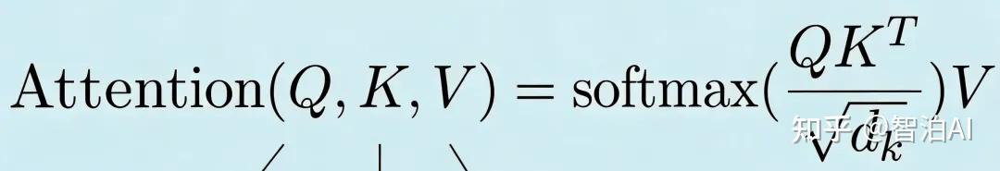

来源：PDF 学习笔记 · 共 2 页 · 提取文本 981 字 · 提取插图 1 张
QKV概念
Transformer架构中， 在encoder和decoder阶段，都有一个MHA（multiheader Latent Attention）
模块，主要用于找到输入各token之间的依赖关系。其中查询（Query，简称Q）、键（Key，简称
K）和值（Value，简称V）这三个是核心中的核心，它们仨一起参与计算，才能得出序列之间的加权
依赖关系。
核心定义：
•
Query（Q）：代表当前需要关注的目标，类似"提问"的需求向量，用于确定关注对象。
•
Key（K）：代表被关注对象的特征标识，类似"响应"的条件向量，用于匹配Query。
•
Value（V）：代表被选中对象的实际信息内容，类似"回答"的结果向量，用于输出加权后的特征。
物理意义： Q是"我需要什么"，K是"谁能提供"，V是"提供什么价值"，三者通过点积建立关联，模拟
人类认知中"目标-条件-反馈"的决策过程。
•
Query： 就相当于本token发出的问题。
•
Key： 就相当于能解答这个问题的所有课本的书签
•
value： 就相当于根据书签在对应的课本中查到的答案。
每个token都能幻化出自己对应的Q，K，V。
Q = X * W_Q
K = X * W_K
V = X * W_V
QKV的运作流程：
自注意力模块中，每个token都会发出请求问题query，向其他token询问答案。其他token先根据
token的问题请求query，找到自己的key，然后基于自己的key检索找到自己认为的答案value， 然后
把答案发给提问token。token比较其他答案发来的value，然后给打上各自的权重， 会基于权重的大
小来挑选更准确的答案。
对每一个查询向量 qᵢ（对应第 i 个元素）， 先算它和所有键向量 kⱼ 的点积， 再除以 √dₖ（目的是
让梯度更稳定）， 最后过一下 softmax 做归一化，得到权重 αᵢⱼ。
这些权重 αᵢⱼ 就是注意力分数， 代表第 i 个元素和第 j 个元素的关联程度。 最后，对第 i 个元素来
说，我们就用这些权重 αᵢⱼ，把所有值向量 vⱼ 做一次加权求和，
得到的结果 zᵢ，就是这一步的输出。
